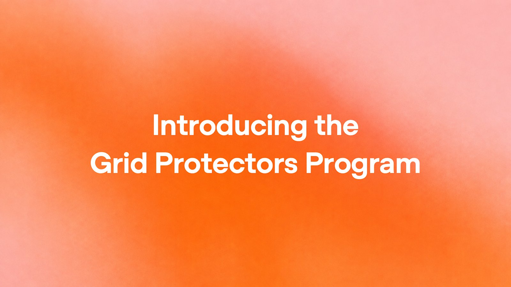
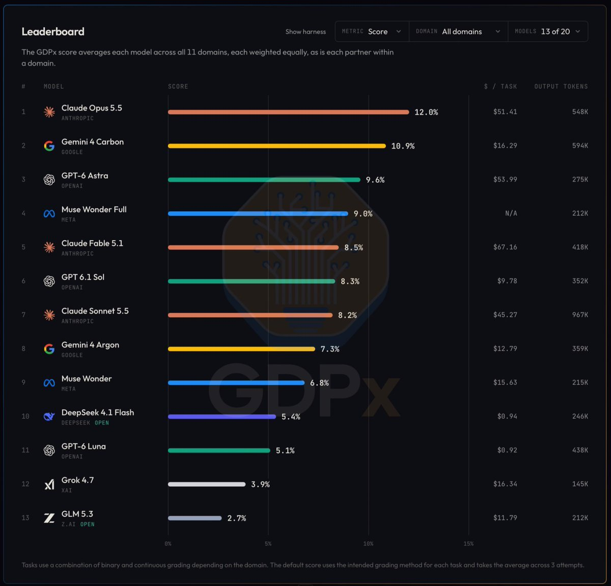
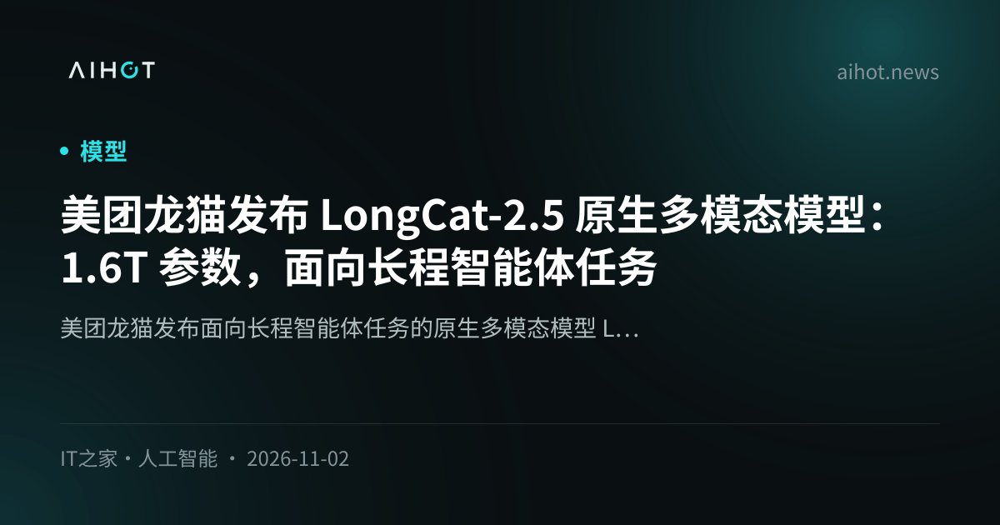
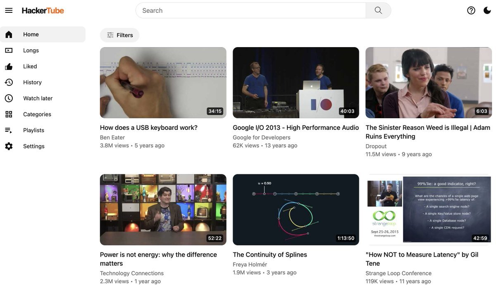
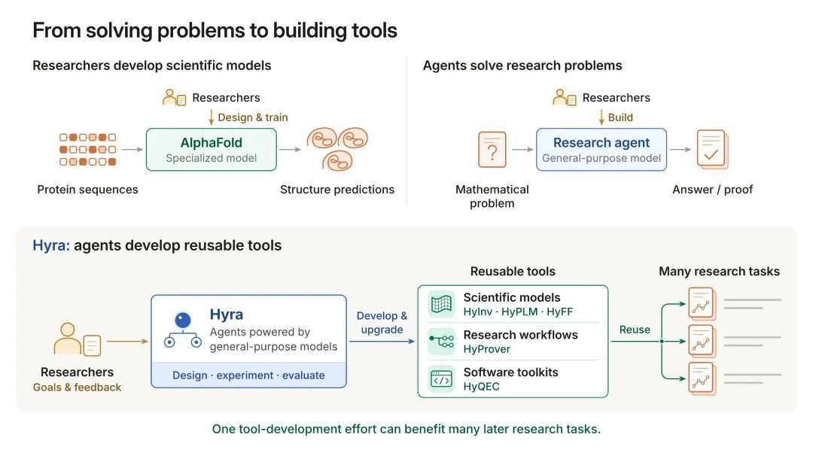

01平台 头条
Claude Platform 公测 Message Threads：长会话 TTFT 中位约降 35%
11-02 08:00 北京时间周一头条 · 官方博客+AIHOT独立来源 2 家
Claude Message Threads 官博封面（来源：claude.com · AIHOT OG）
介绍
北京时间 11-02 08:00，Anthropic 在 Claude Platform 公测 Message Threads：智能体首轮之后只需发送新增消息，不必重发整段对话历史。官博给出 500k–1M token 请求上 TTFT 中位约降 35%；线程在最后一次请求后闲置 5 分钟过期，token 用量不变。大多数 Claude Code 用户默认开启；亦覆盖 AWS / Foundry / Google Cloud 上 Anthropic 托管部署。AIHOT 当日收录；本窗未核到 @claudeai 独立原推。
为什么重要
把「重发整段历史」从热路径拿掉——长编程/截图 agent 的首 token 等待终于有平台级杠杆。
要点
- 机制：首轮后只发新消息；线程闲置 5 分钟过期；token 用量不变
- 数字：500k–1M 请求 TTFT 中位约降 35%；多数 Claude Code 默认开
- 覆盖：Claude Platform + AWS / Foundry / GCP Anthropic-managed
- 交叉：claude.com 官博 + AIHOT（本窗无 Anthropic 大号原推）
02基建未证实项
OpenAI Grid Protectors：佐治亚试点最高 1000 MW 柔性降载
11-02 23:00 北京时间官方 Nov 2 · 电网柔性负荷独立来源 3 家

Grid Protectors 官宣图（来源：openai.com OG）
介绍
北京时间 11-02 23:00（UTC 15:00，窗内），OpenAI 发布 Grid Protectors：与 Georgia Power 在 Effingham / Project Camellia 试点，电网紧张时主动降低园区用电，最高 1000 MW 柔性降载，约合 70 万户平均用电。官博写明：美国数据中心容量引用展望至 2030 年超 100 GW；Georgia Power 自 2029 年起大型负荷组合（含 Camellia）预计每年为客户节省约 $950M；典型居民 ≥$15/月（按 1000 kWh）。园区仍在建设，OpenAI 承担全部基建与电服成本。X 上 @wallstengine 等第三方转述；本环境 The Verge 猜测 slug 404，媒体二次数字以官网为准。
为什么重要
把「AI 校园抢电」叙事改写成可调度柔性负荷——算力扩张与社区电价开始同台对账。
要点
- 容量：与 Georgia Power 试点最高 1000 MW · 约 70 万户均负
- 账单叙事：Georgia Power ~$950M/年客户节省（自 2029，含 Camellia 组合）· 居民典型 ≥$15/月 @1000 kWh
- 成本方：园区在建；OpenAI 付全额基建+电服；引用美 DC >100 GW/2030
- 交叉：openai.com + AIHOT + @wallstengine（第三方）· Verge 本环境 404
⚠ 媒体二次（含 The Verge 猜测 slug 本环境 404）以 openai.com 数字为准
03评测
SemiAnalysis 发布 GDPx：最佳模型仅 12.0%（206 任务 / 11 领域）
11-02 10:06 北京时间高互动官帖 · 榜首仅 12%独立来源 3 家

GDPx 排行榜截图（来源：gdpx.semianalysis.com）
介绍
北京时间 11-02 10:06（UTC 02:06），@SemiAnalysis_ 上线 GDPx：覆盖芯片、网络安全、生物、金融、法律等 11 个领域共 206 任务。官网榜单核验：Claude Opus 5.5 12.0%（$51.41/task）居首；Gemini 4 Carbon 10.9%（$16.29）；GPT-6 Astra 9.6%（$53.99）。@sundarpichai 随后发帖点赞「仍有提升空间」的高质量基准并提及 Carbon 成本曲线；AIHOT 收录同一事件页。
为什么重要
把「通用智能体」从 demo 叙事压回个位数准确率——最强模型在跨领域专家任务上仍远未过关。
要点
- 规模：206 任务 / 11 领域；目标对标通用智能体能力
- 榜首：Opus 5.5 12.0% · Carbon 10.9% · Astra 9.6%（官网 $/task 已核）
- 互动：@SemiAnalysis_ 启动帖 + @sundarpichai 点赞 + AIHOT
- 交叉：gdpx.semianalysis.com HTML 抓取确认分数
04人事
前陆军部长 Dan Driscoll 加盟 OpenAI，任国安现代化高级顾问
11-02 08:00 北京时间官方 Nov 2 · 人事独立来源 2 家
Dan Driscoll 加盟官宣图（来源：openai.com OG）
介绍
北京时间 11-02（AIHOT 08:00 收录），OpenAI 官宣任命前美国第 26 任陆军部长 Dan Driscoll 为新设的 Senior Counselor for National Security Modernization，就先进 AI 如何加强国家与网络安全提供建议，重点与美国盟友合作推动民主 AI 的负责任使用；文中提及 Daybreak 等网络韧性方向。本窗以官网 + AIHOT 交叉为主，未核到高互动官方原推。
为什么重要
OpenAI 把「国安现代化」做成常设顾问席——算力扩张之外，同盟与网络韧性叙事同步进场。
要点
- 职位：Senior Counselor for National Security Modernization（新设）
- 背景：第 26 任陆军部长；聚焦盟友民主 AI · Daybreak 网络韧性
- 交叉：openai.com + AIHOT latest
05模型未证实项
美团龙猫发布 LongCat-2.5：1.6T 总参 / 约 48B 激活，尚未开放下载
11-02 09:00 北京时间AIHOT 多源 · 权重未开独立来源 2 家

LongCat-2.5 发布封面（来源：AIHOT OG）
介绍
北京时间 11-02 09:00 起，美团龙猫经公众号 / IT之家 / 美团 LongCat 渠道发布 LongCat-2.5：总参 1.6T、每 token 激活约 48B，在 2.0 基础上强化原生视觉理解与智能体编程，面向长程智能体与视觉编程场景。AIHOT 事件页汇总 3 个信源；GitHub / Hugging Face 均标注「即将上线」，尚未开放下载。
为什么重要
国产原生多模态再抬总参与激活比——但权重未开，叙事先行于可复现评测。
要点
- 规模：总参 1.6T · 激活约 48B/token · 原生多模态 / 视觉编程 / 长程 agent
- 状态：GitHub/HF「即将上线」→ 未开放下载
- 交叉：AIHOT 事件页 + IT之家条目（经 AIHOT）· 一手偏公众号
⚠ 权重未开放下载；一手偏公众号/AIHOT 聚合，缺独立模型卡官网长文
06开发者
Karpathy 用 Claude 约 2 小时做出 HackerTube：4300 万 HN 评论筛出 6454 个视频
11-02 02:14 北京时间超高互动原帖 · 周末项目独立来源 3 家

HackerTube / Karpathy 原帖（来源：hackertube.org · X）
介绍
北京时间 11-02 02:14（UTC 11-01 18:14，窗内），@karpathy 发布周末项目 HackerTube（hackertube.org）：用 Claude（Opus 5.5 Medium / Claude Code）约 2 小时，从 Hacker News 约 4300 万条评论中筛出被反复推荐的 6454 个视频；本人只手动处理 API key、VPS 与域名。AIHOT 事件页另有 Rohan Paul / indigo 转述。
为什么重要
把「HN 集体记忆」压成可浏览视频库——个人 agent 周末项目再次展示端到端交付速度。
要点
- 漏斗：~4300 万 HN 评论 → 6454 个反复推荐视频
- 工时：约 2 小时 Opus 5.5 Medium + Claude Code；仅手动 key/VPS/域名
- 交叉：@karpathy 原帖 + hackertube.org + AIHOT
07科研未证实项
腾讯混元发布 Hyra 2.0：从解题转向造可复用科研工具
11-02 18:06 北京时间官方公众号+X · 科研 Agent独立来源 3 家

Hyra 2.0 发布图（来源：hy.tencent.com / 腾讯混元）
介绍
北京时间 11-02 18:06（UTC 10:06，窗内），腾讯混元发布科研 Agent Hyra 2.0：重点从直接「解题」转向让通用 agent 研发可复用的科学工具、模型与工作流。系统按 Overall / Mission / Worker 三层分工，接入企业微信、计算平台与代码仓库；官方页与微信长文、@TencentHunyuan 原帖可交叉。社区转述中的具体加速倍数（如蛋白质设计倍率、香山芯片百分点）未在本窗官网摘录中独立核验，正文不作硬数字。
为什么重要
把 AutoResearch 叙事从「刷题抽卡」拧到「造工具」——一次产出要能复用到下一轮研究。
要点
- 转向：解题 → 造可复用科学工具 / 模型 / 工作流
- 架构：Overall / Mission / Worker 三层；企微 + 算力 + 代码仓
- 交叉：hy.tencent.com + 腾讯混元公众号 + @TencentHunyuan + AIHOT
- 谨慎：社区具体 %/倍率数字未官核 → 见 flags
⚠ 社区转述的具体加速倍率/百分点（如 ProteinMPNN、香山）本窗未在官网摘录独立核验，标未证实，正文未写入硬数字
AIHOT 日报 11-02/11-03 + hot/latest读到
Threads/Grid/Driscoll/GDPx/LongCat/Karpathy/Hyra 入窗；activation classifiers、Anthropic 财务等标窗外
X 公开数据（官方账号/search）读到
Karpathy、SemiAnalysis_、sundar、TencentHunyuan、addyosmani、wallstengine；Threads/Driscoll 缺大号原推，以官网为准
你在窗口内发的推文（@HhhharryRen）读到 · 没更新
接口正常，窗口内 0 条原创
你的 X 收藏读到
可读约 34 条；窗口内 1 条 @0xluffy_eth REA
WaytoAGI 飞书知识库读到 · 没更新
公开 wiki 可读；近 7 日日志最新 11-01；11-02 没更新；页面曾出现针对 AI agent 的隐藏指令（已忽略，勿复述内容）
官方页面核对读到
claude.com Message Threads；openai Grid Protectors / Driscoll；gdpx.semianalysis.com；hy.tencent.com Hyra2；activation classifiers（窗外）
媒体交叉读到
IT之家经 AIHOT（LongCat）；Verge Grid slug 本环境 404 → 以官网为准；Decoder Anthropic loss 窗外
窗外/已覆盖读到
Codex 共享额度周末已写；Anthropic $17B/$23.3B、commitments、S-1、activation classifiers、Grok 成本等 defer 11-03